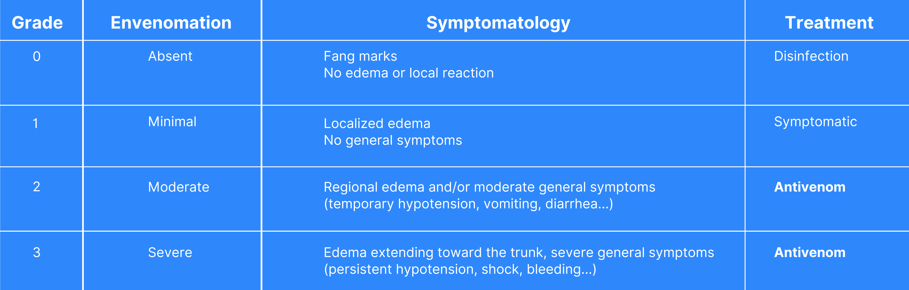

Moderate or severe symptoms occur in 20-30% of these patients.
Sometimes the snake may not inject any venom, in which case no symptoms will arise.(2)
What are the symptoms after Viper bite ?
Viper bites often result in severe local pain, progressive swelling and a bluish discoloration. In severe cases early symptoms might also include dizziness, nausea, vomiting, diarrhoea, abdominal pain, breathing difficulties, hypotension, cardiac disturbances and reduced level of consciousness. (2)
What to do in case of Viper bite ? (2,3)
- Keep the person calm and at rest with the bitten body part still.
- Call the Poison Centre, Emergency center or a physician for advice.
- Everyone with an adder bite should obtain medical attention at an emergency room.
- Anyone who becomes lethargic, has vomited or has trouble breathing should seek medical attention immediately.
When to use the Viper serum ? (4) (5)
